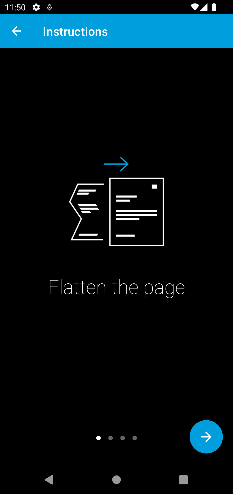

Migrate to 3.0.0¶
In version 3.0.0 we modernized our UI and added support for light and dark modes. In addition, we simplified how the UI is customized. We also unified the public API of the SDK and introduced an easier way to customize certain parts of the UI.
Migrate from Component API¶
The Component API allowed more UI customization options at the cost of a more difficult integration and maintenance. It was based on fragments, and you had to manage navigation between them and also update the navigation whenever we introduced breaking changes.
Maintaining the Component API along with the simpler Screen API required an increasing amount of effort as we added new features. We decided therefore to unify both APIs and introduce the ability to inject fully custom UI elements.
The major benefit of the Component API was the ability to use a custom navigation bar (toolbar or action bar). Via UI injection that is still possible with the new public API.
The following steps will help you migrate to the new public API:
- Configure the SDK the same way as before by using
GiniCapture. - If you used a custom navigation bar, then you can use the new ability to inject fully custom UI elements. For this you
need to implement the
NavigationBarTopAdapterinterface and pass it toGiniCapture.newInstance().setNavigationBarTopAdapter(). TheNavigationBarTopAdapterinterface declares the contract your view has to fulfill and allows the SDK to ask for your view instance when needed. - Use the
CameraActivityto launch the SDK instead of theCameraFragmentCompat. - Handle the result of the
CameraActivityto receive the extracted information (error or cancellation). - Remove all code related to interacting with the SDK’s fragments. From now on the entry point is the
CameraActivityand customization happens throughGiniCaptureand via overriding of resources. - Use the new UI customization options and follow the screen-by-screen UI customization section to adapt the look of the new UI.
Migrate from Screen API¶
The new public API is based on the Screen API, so you only need to use the new UI customization options and follow the screen-by-screen UI customization section to adapt the look of the new UI.
Overview of New UI Customization Options¶
To simplify UI customization we introduced global customization options. There is no need to customize each screen separately anymore.
Styles¶
We leverage the power of Material Design to configure a theme for the SDK with a global color palette and typography that is applied on all the screens.
Using global styles for the various widgets, we enable you to customize them in a single place. They are then consistently applied on all screens.
Theme¶
The theme style is based on Material Design v2 and is named GiniCaptureTheme. To override the theme in your
application use Root.GiniCaptureTheme as the parent:
<style name="GiniCaptureTheme" parent="Root.GiniCaptureTheme">
(...)
</style>
Widgets¶
The style of buttons and other widgets is based on Material Design v3. To override them in your application use the root style as the parent, for example:
<style name="GiniCaptureTheme.Widget.Button.OutlinedButton" parent="Root.GiniCaptureTheme.Widget.Button.OutlinedButton">
(...)
</style>
Colors¶
We introduced a global color palette which you are free to override. The custom colors will then be applied on all screens.
You can find the names of the colors here.
Note
If you have overridden the GiniCaptureTheme then the theme colors you have set there will override the color
palette customization.
Images¶
Customizing images is done the same way as before via overriding of drawable resources. You can find the drawable resource names in the screen-by-screen UI customization section.
We replaced most drawables with vector drawables. Unfortunately due to the limitations of vector drawables some images had to be added as PNGs.
If you use vector drawables please add them to the drawable-anydpi folder so that they also override any density specific PNGs.
Typography¶
We introduced a global typography based on text appearance styles from Material Design v3. To override them in your application use the root style as the parent, for example:
<style name="GiniCaptureTheme.Typography.Body1" parent="Root.GiniCaptureTheme.Typography.Body1">
(...)
</style>
Note
If you have overridden the GiniCaptureTheme then the text appearances you have set there will override the
typography customization. The same applies to overridden widget styles where you have set a custom text appearance.
You can find all the typography styles here.
Text¶
Text customization is done the same way as before via string resources.
You can find all the string resources here.
UI Elements¶
Certain elements of the UI can now be fully customized via UI injection. This allowed us to drop the Component API while still allowing in-depth customization for certain parts of the UI.
UI injection utilizes view adapter interfaces which you can implement and pass to GiniCapture when configuring the
SDK. These interfaces declare the contract the injected view has to fulfill and allow the SDK to ask for your view
instance when needed.
The most important injectable UI element is the top navigation bar. You may also show the navigation bar on the bottom using your own custom view. You can find more details here.
Dark mode¶
To customize resource for dark mode add them to resource folders containing the -night resource qualifier.
Migrate to the new UI¶
Onboarding¶
Old and new UI:
{kind=link}
{kind=link}
The new onboarding screen uses the global UI customization options. You can discard the old screen specific customizations.
Images and text are onboarding page specific and need to be customized for each page.
Here you can find the detailed description on how to customize this screen.
Breaking Changes¶
Setting Custom Onboarding Pages¶
The OnboardingPage class was changed to also allow setting a title for the page and inject a view for the
illustration.
You can use the ImageOnboardingIllustrationAdapter to display drawable resources.
If you are setting custom onboarding pages, then you have to create the OnboardingPage as shown in the example
below:
val page1 = OnboardingPage(
R.string.your_title_page_1,
R.string.your_message_page_1,
ImageOnboardingIllustrationAdapter(R.drawable.your_illustration_page_1)
)
val page2 = OnboardingPage(
R.string.your_title_page_2,
R.string.your_message_page_2,
ImageOnboardingIllustrationAdapter(R.drawable.your_illustration_page_2)
)
GiniCapture.newInstance()
.setCustomOnboardingPages(arrayListOf(page1, page2))
.build()
New Features¶
Custom Illustration Views¶
By implementing the OnboardingIllustrationAdapter interface and passing it to either GiniCapture or the
OnboardingPage constructor you can inject any custom view for the illustration.
For example if you need to show animated illustrations you can use a Lottie view in your OnboardingIllustrationAdapter implementation.
You can find more details here.
Camera¶
New Features¶
We implemented image cropping. Parts of the image that appears outside the white camera frame will be cut out from the final image.
Custom activity indicator view¶
There is a default implementation of indicator which indicates that image is in the cropping process, but you can show your own activity indicator
by implementing the CustomLoadingIndicatorAdapter interface and passing it to GiniCapture.
Breaking Changes¶
We removed the tooltip popups that were shown on first launch.
QR code scanning¶
Review¶
New Features¶
Custom loading indicator on the Process button¶
There is a default implementation of loading indicator on Process button that indicates document upload is in progress, but you can show your own indicator
by implementing the CustomLoadingIndicatorAdapter interface and passing it to GiniCapture.
Bottom navigation bar¶
You can show a bottom navigation bar by passing true to GiniCapture setBottomNavigationBarEnabled. There is a default implementation, but you can also use
your own by implementing the ReviewNavigationBarBottomAdapter interface and passing it to GiniCapture.
Breaking Changes¶
Re-ordering and rotation of the images are not supported anymore. The Gini Pay API can automatically correct rotation during processing. If processing of images fails user is redirected to the Error screen.
Help¶
The new help screen uses the global UI customization options.
Analysis¶
The new analysis screen uses the global UI customization options.
Breaking Changes¶
The new analysis screen does not show the page count of PDF files and preview image for photo documents.
New Features¶
Error¶
The new error screen uses the global UI customization options.
Breaking Changes¶
Showing errors during usage of the SDK was changed from snackbar to a whole new screen.
New Features¶
New UI¶
The new error screen gives options to retake photos or enter details manually and displays errors with more detailed description.
Bottom navigation bar¶
You can show a bottom navigation bar by passing true to GiniCapture setBottomNavigationBarEnabled. There is a default implementation, but you can also use
your own by implementing the ErrorNavigationBarBottomAdapter interface and passing it to GiniCapture.
You can find more details here.
No results¶
The new no results screen uses the global UI customization options.
New Features¶
New UI¶
The new no results screen gives options to enter document details manually.
Bottom navigation bar¶
You can show a bottom navigation bar by passing true to GiniCapture setBottomNavigationBarEnabled. There is a default implementation, but you can also use
your own by implementing the NoResultsNavigationBarBottomAdapter interface and passing it to GiniCapture.
You can find more details here.